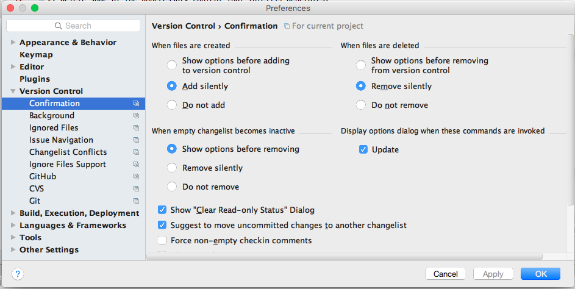
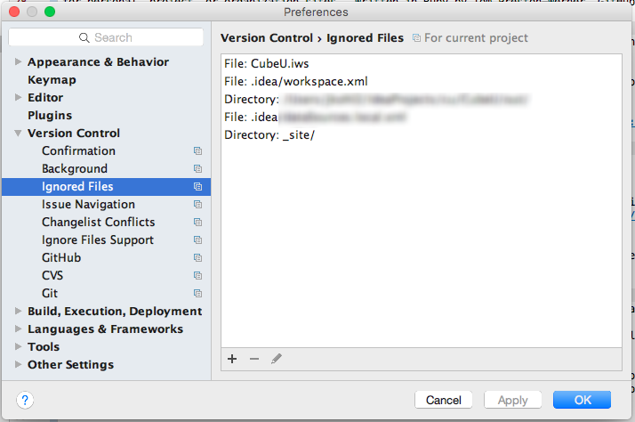
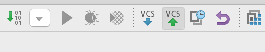
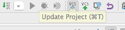
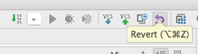
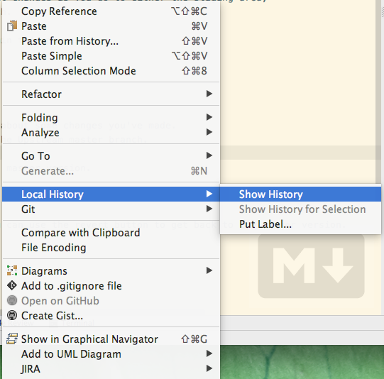
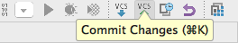
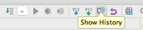

Chapters
Introduction
Now that you're familiar with basic Git commands, you're probably interested in how you can use IntelliJ to interact with GitHub.
This section walks through the IntelliJ tools that will get you up and running in no time.
Prerequisites
- IntelliJ installed
- GitHub account
- GitHub plugin installed (TODO: setup here)
- Understanding of Git commands
Lab 6: Orienting in IntelliJ
VCS Fetch Fork Update
A Few Quick Setup Steps
It is recommended that you change two IntelliJ defaults to make your life a bit easier:
-
Auto add new files By default, IntelliJ will not add newly created files into your staging area. It is helpful to enable the automatic add of newly created files.
To do this, go to menu bar, IntellJ > Preferences > Version Control > Confirmation
Under the When files are created section, select Add silently

-
Ignore files To do this, go to menu bar, IntellJ > Preferences > Version Control > Ignored Files

You can also add files to your .gitignore file
TODO: should we have a preference?
TODO: MM What files exactly need to be ignored?
The IntelliJ Pocket Knife
IntelliJ offers many paths to interact with Git.
These include:
- Buttons in the primary IDE
- Version Control in the Gutter
- File drop down menu
- Main menu VCS drop down
These different paths may create distraction, so let's start with the basics and then build our skills as we explore other paths.
Keep in mind that IntelliJ often will use general menu command names instead of Git commands, which might cause some confusion. However, as you use these commands, you will notice aspects of Git reflected in some choices you can make if you don't want to take the default.
Buttons in the primary IntelliJ IDE
In the upper, right corner of your IDE, you'll find a collection of buttons that are the simplest way of interacting with GitHub:

VCS Update Project Button
A lot changes in a short time with over 50 Squirrel developers, so it is important to refresh frequently from the Upstream master branch.
Use the VCS Update Project button to consume any recent changes

In the event that there is a conflict between your local changes and upstream, you will need to resolve these conflicts before you check in.
There are many strategies for resolving merge conflicts, using IntelliJ and also in GitHub. We will get into the more advanced strategies later on, but for now, there is a way to let new changes in and then apply yours back on top via Revert.
Revert Button as one way to resolve merge issues
On occasion, you may want to just forget about some changes you've made or you have a Merge conflict. In this case, you can revert to a version that is in the Upstream master branch.
Use the Revert button to get the current master version.

Then go to Local History to view your most recent changes by right-clicking on the file.

From there, find the version of the file timestamped before you did the Revert action.
Move around changes between your older version and the freshest version. Note that you can copy/paste from the left-hand side older version right into the right-hand side fresh version. Click OK and you will now have all changes in your current version.
Or, if you know that your version is already correct, right click on your original timestamped version and select Revert.
After either of these steps, you'll now have a version which will no longer cause a conflict at commit.
VCS Commit Changes Button
As you work, you'll probably want to incrementally stow your changes by committing at logical breakpoints. You can commit these locally to your staging area, or push them up to your public forked branch.
Use the VCS Commit Changes button to begin this process.

TODO: add in next screens for choices

TODO: MM what is this about? Below. Looks like it needs to be reworded a bit.
So shall i first create a fork and then a clone of my fork in my machine, then from there, push my change into it, and do the pull request from that fork online? That is the recommended workflow.
so far i have cloned the repo, done my changes, commit them locally, then try to do a pull request with intellij If by "clone the repo", you mean the original repo (instead of your fork), you can rename that origin as upstream, and add a new remote 'origin' to your fork.
git remote rename origin upstream
git remote add origin https://github.com/you/yourFork
Version Control in the Gutter
File drop down menu
Main menu VCS dropdown
The main menu has a VCS dropdown which is the interaction point for any version control system. We previously used this when setting up CVS and the same is true for GitHub.
Here, you will find all the logical operations and specific CVS or Git commands.
For Further Reading
- Links